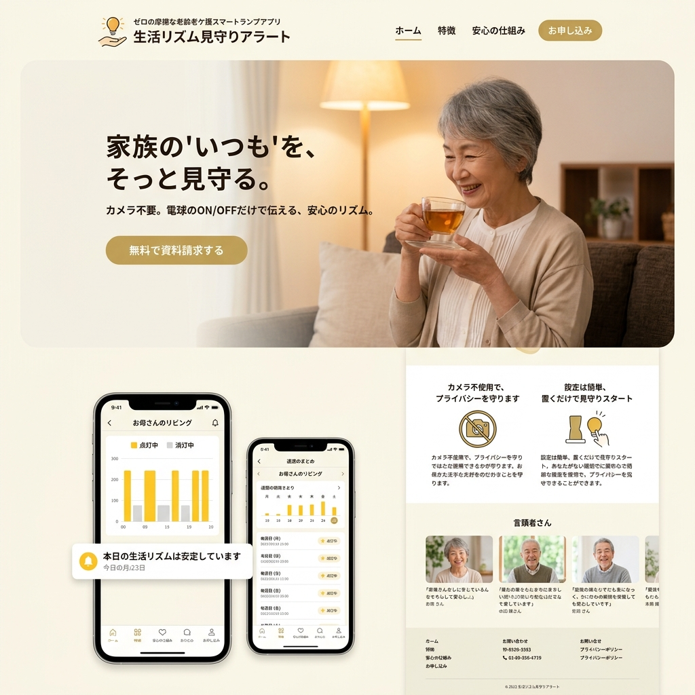

太陽のリズムを、
あなたの寝室にインストールする。
現代人が眠れないのは、夜も明るすぎるからです。GENTLE-LAMPは、概日リズム（サーカディアンリズム）と睡眠医学に基づき、時間帯に合わせて光の「色温度」と「波長」を全自動でコントロールする究極のスリープテック照明。

ブルーライトという「人工の太陽」
夜になっても煌々と照らされる白いLED照明やスマートフォンの光。これらに含まれる強烈なブルーライトは、脳に「今は昼間だ」と錯覚させ、睡眠ホルモン（メラトニン）の分泌を極端に阻害します。不眠症の最大の原因は、実はあなたの部屋の天井にあるのです。
脳を騙し、自然な眠りへ誘うアルゴリズム
メラトニン・プロテクト発光
日没時刻を過ぎると、GENTLE-LAMPは自動的にブルーライトの波長を完全にカット。焚き火のような深い琥珀色（アンバー）へと変化し、脳の入眠準備を強力にサポートします。
フェードアウト入眠ガイド
ベッドに入ってから30分かけて、光が呼吸するようにゆっくりと暗くなっていきます。この「擬似的な日没」が副交感神経を優位にし、スムーズな眠りに導きます。
サンライズ・ウェイクアップ
けたたましいアラーム音で強制的に起こされるストレスは最悪です。起床時間の30分前から、朝日のような青白い光が徐々に部屋を照らし、自然でスッキリとした目覚めを実現します。
スマートウォッチの睡眠データと完全同期
Apple WatchやOura Ringのデータと連動。「昨晩は深い睡眠（ノンレム睡眠）が少なかった」とAIが判定した場合、その日の夜は自動的に「よりリラックス効果の高い暖色系の光」の時間を長めに設定するダイナミック・アジャストメント機能を搭載。
読書やデスクワークに最適化された「集中モード」
睡眠時だけではありません。日中のテレワーク時には、脳を覚醒させ集中力を高める「6000ケルビン」の昼光色を照射。体内時計をリセットし、昼夜のメリハリを空間全体でデザインします。
Case Study | 慢性的な不眠に悩むビジネスマン
睡眠導入剤を手放せなかった40代男性。寝室とリビングの照明をすべてGENTLE-LAMPに変更したところ、導入からわずか1週間で入眠までの時間が1時間以上短縮。朝もアラームが鳴る前に自然と目が覚めるようになり、「日中の頭のキレが20代の頃に戻った」と語ります。
「暗闇の価値」を取り戻す
人類は電気を発明して夜を征服しましたが、同時に「質の高い睡眠」を失いました。私たちは最先端の光学テクノロジーを用いて、現代の寝室に「最も自然で美しい夜」を取り戻します。